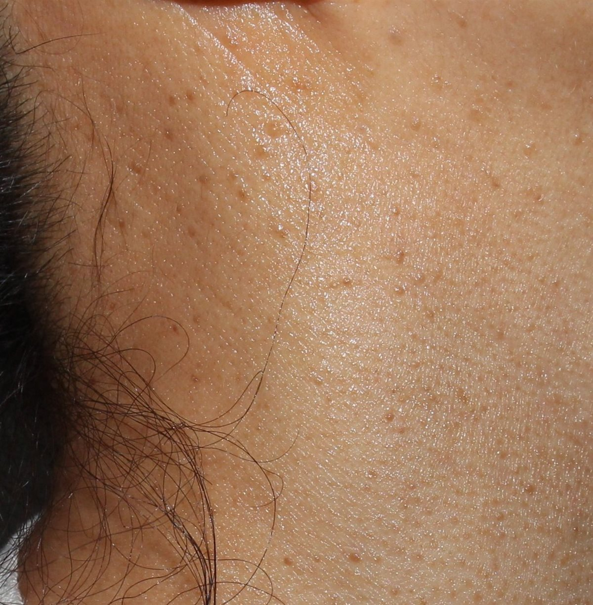

DOCTOR'S COLUMN
원장 컬럼
후한의원 춘천점 김지유 대표원장이 진료실에서 자주 받는 질문을
편평사마귀·쥐젖·비립종·검버섯 제거 중심으로 하나씩 정리합니다.

편평사마귀
춘천 편평사마귀, 가족끼리 수건·면도기로 옮을 수 있나요?
가족이 쓰는 수건이나 면도기로 편평사마귀가 옮을 수 있을까요? 다른 사람에게 옮는 경로와 내 몸 안에서 번지는 자가접종의 차이, 집에서 바로 바꿀 수 있는 전파 예방 습관을 정리했습니다.
· 김지유 대표원장
피지선증식증
춘천 이마·코 주변 노란 돌기, 피지선증식증과 편평사마귀는 어떻게 구분하나요?
이마·코·볼에 생기는 노르스름한 돌기, 피지선증식증이 편평사마귀와 어떻게 다른지, 짜내면 안 되는 이유와 진료실에서의 감별·시술·관리를 정리했습니다.
· 김지유 대표원장

편평사마귀
춘천 손등·손가락 편평사마귀, 왜 손에 생기고 어떻게 관리하나요?
손등과 손가락에 납작한 돌기가 늘어난다면? 손에 편평사마귀가 잘 생기는 이유와 손 씻기·건조·거스러미 습관의 영향, 보통사마귀·검버섯과의 구분, 시술 후 손 관리를 정리했습니다.
· 김지유 대표원장
한관종
춘천 눈 밑 한관종, 편평사마귀·비립종과 어떻게 구분하나요?
눈 밑에 모여 나는 살구빛 돌기, 한관종이 편평사마귀·비립종과 어떻게 다른지, 제거를 신중하게 계획하는 이유와 시술 뒤 관리를 정리했습니다.
· 김지유 대표원장

편평사마귀
춘천 편평사마귀, 제거했는데 왜 다시 생길까요?
분명히 제거했는데 몇 달 뒤 비슷한 돌기가 다시 보인다면? 편평사마귀가 다시 생기는 이유와 같은 자리 재발·주변 새 병변을 구분하는 법, 재발을 줄이는 생활·진료 관리를 정리했습니다.
· 김지유 대표원장

비립종
춘천 눈가 비립종, 왜 생기고 어떻게 제거하나요?
눈가에 박힌 하얀 좁쌀, 비립종이 생기는 이유와 미세 절개 압출 제거 과정, 제거 후 관리와 예방 습관을 정리했습니다.
· 김지유 대표원장
편평사마귀
춘천 편평사마귀, 건조한 계절에 더 번지는 것처럼 느껴지는 이유는?
찬 바람이 불고 난방을 시작하면 편평사마귀가 늘어난 것 같다는 분이 많습니다. 건조함 자체보다 피부 장벽, 가려움, 긁는 습관이 어떻게 맞물리는지 정리했습니다.
· 김지유 대표원장
치료 방법
춘천 편평사마귀 시술 당일, 소독부터 재생밴드까지 어떻게 진행되나요?
처음 시술을 앞둔 분들이 가장 궁금해하는 당일 흐름을 감별, 소독, 연고 마취, 침·레이저 시술, 재생밴드 부착 순서대로 풀어 정리했습니다.
· 김지유 대표원장
지루각화증
검버섯(지루각화증), 점과 어떻게 다를까요?
나이가 들며 생기는 검버섯의 특징, 점·기미와 구분하는 요령, 후한의원 춘천점의 침·레이저 제거 방식을 정리했습니다.
· 김지유 대표원장
감별 진단
춘천 목에 쥐젖과 편평사마귀가 함께 있다면 어떻게 구분하나요?
목에 오돌토돌한 돌기가 여러 개라면 쥐젖과 편평사마귀가 섞여 있을 수 있습니다. 매달린 모양, 납작한 모양, 배열, 옮는지 여부로 둘을 나누는 기준과 제거 방법의 차이를 정리했습니다.
· 김지유 대표원장
치료 후 관리
춘천 편평사마귀 제거 후 재생테이프는 언제까지 붙이나요?
시술 뒤 붙이는 재생테이프, 며칠이나 붙여야 하는지와 떨어졌을 때 대처법, 테이프를 뗀 뒤 이어 갈 관리까지 시술 후 회복 흐름에 맞춰 정리했습니다.
· 김지유 대표원장
본 컬럼은 일반적인 의학 정보 제공을 목적으로 하며, 개인의 상태에 따라 진단과 치료 방법은 달라질 수 있습니다.
OFFICIAL COLUMN
공식 홈페이지 칼럼
후한의원 춘천점 공식 홈페이지에 실린 칼럼입니다. 클릭하면 새 창으로 열립니다.